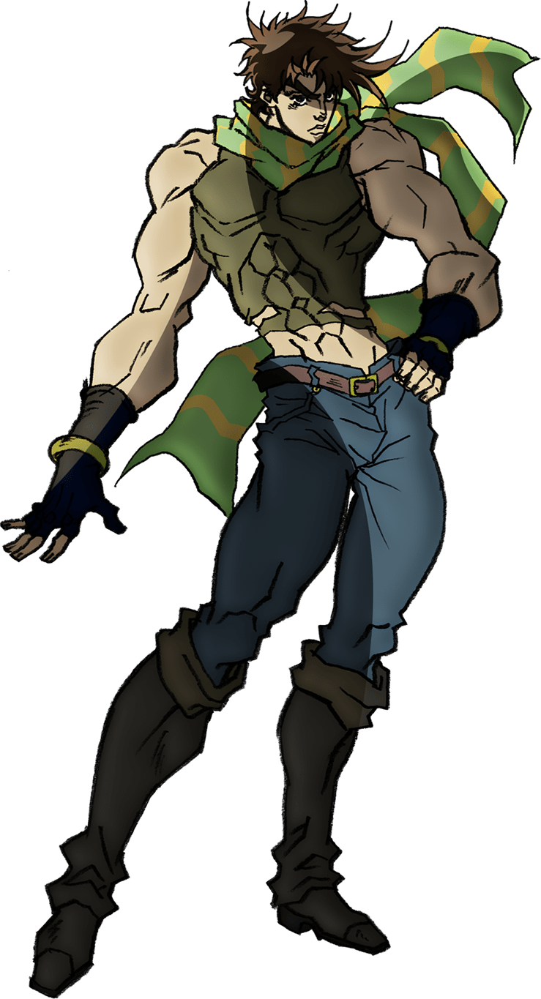

JOSEPH JOESTAR
Joseph Joestar é o protagonista da Parte 2 de JoJo’s Bizarre Adventure: Battle Tendency. Neto de
Jonathan Joestar, Joseph herda não só o sangue dos Joestar, mas também a luta contra forças
sobrenaturais. Diferente do avô, que era nobre e sério, Joseph é impulsivo, sarcástico, cheio de
truques e extremamente carismático. Ele vive metido em confusão e adora blefar no meio da luta,
surpreendendo os inimigos com sua inteligência e imprevisibilidade.
Desde jovem, Joseph já demonstra afinidade natural com o Hamon, mas só começa a treinar a
técnica seriamente quando os Pillar Men aparecem como ameaça. Ao lado de Caesar Zeppeli e sob o
treinamento rígido de Lisa Lisa, ele se prepara para enfrentar os seres mais poderosos que a
humanidade já conheceu. Sua maior arma, porém, não é o Hamon — é sua mente afiada, capaz de
bolar estratégias absurdas mesmo nas piores situações.
Durante a história, Joseph amadurece sem perder o senso de humor. Enfrenta perdas, supera
inimigos com inteligência e coragem, e se prova como um verdadeiro Joestar. Ao fim da parte 2,
ele derrota Kars, que havia se tornado o "ser perfeito", selando sua vitória de forma épica e
inesperada.
Joseph é lembrado como um dos JoJos mais amados da série: esperto, ousado, e acima de tudo,
humano.